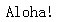
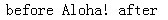

关于 ':before' 和 ':after' 伪元素
':before' 和 ':after' 伪元素用来在一个元素的内容之前或之后插入生成的内容。
关于 ‘:before’ 和 ‘:after’ 伪元素的详细信息，请参考 CSS2.1 规范 5.12.3 The :before and :after pseudo-elements 和 12.1 The :before and :after pseudo-elements 中的内容。
CSS 2.1 规范中描述的 ':before' 和 ':after' 伪元素，在 CSS 1 历史规范中均无规定，这导致早期版本的浏览器，如：IE6 IE7 IE8(Q) 不支持他们。
使用了 ':before' 和 ':after' 伪元素，可能会使页面在 IE6 IE7 IE8(Q) 中的效果不尽人意。
| IE6 IE7 IE8(Q) |
|---|
对于此问题，我们通过以下的测试用例来说明。
分析以下代码：
<style type="text/css"> p:before { content: "before"; } p:after { content: "after"; } </style> <p> Aloha! </p>
根据 CSS2.1 规范中的描述可知，最终页面上显示的文本应该是 'before Aloha! after'。
这段代码在不同的浏览器环境中的表现：
| IE6 IE7 IE8(Q) | IE8(S) Firefox Opera Safari Chrome |
|---|---|
|  |  |
所以对于 ':before' 和 ':after' 伪元素的支持情况，如下表：
| IE6 | IE7 | IE8(Q) | IE8(S) | Firefox | Safari | Opera | Chrome |
|---|---|---|---|---|---|---|---|
| N | N | N | Y | Y | Y | Y | Y |
【注】：实际中其他除常用 HTML 标记同样适用于次例，并非仅 P 标记自身不支持。
使用 JavaScript 或 jQuery 的 Pseudo Plugin 插件来模拟 ':before' 及 ':after' 伪元素的效果。
| 操作系统版本: | Windows 7 Ultimate build 7600 |
|---|---|
| 浏览器版本: |
IE6
IE7 IE8 Firefox 3.6.3 Chrome 6.0.437.3 dev Safari 5.0 Opera 10.54 |
| 测试页面: | before_after_pseudo-class.html |
| 本文更新时间: | 2010-07-08 |
before after Pseudo element